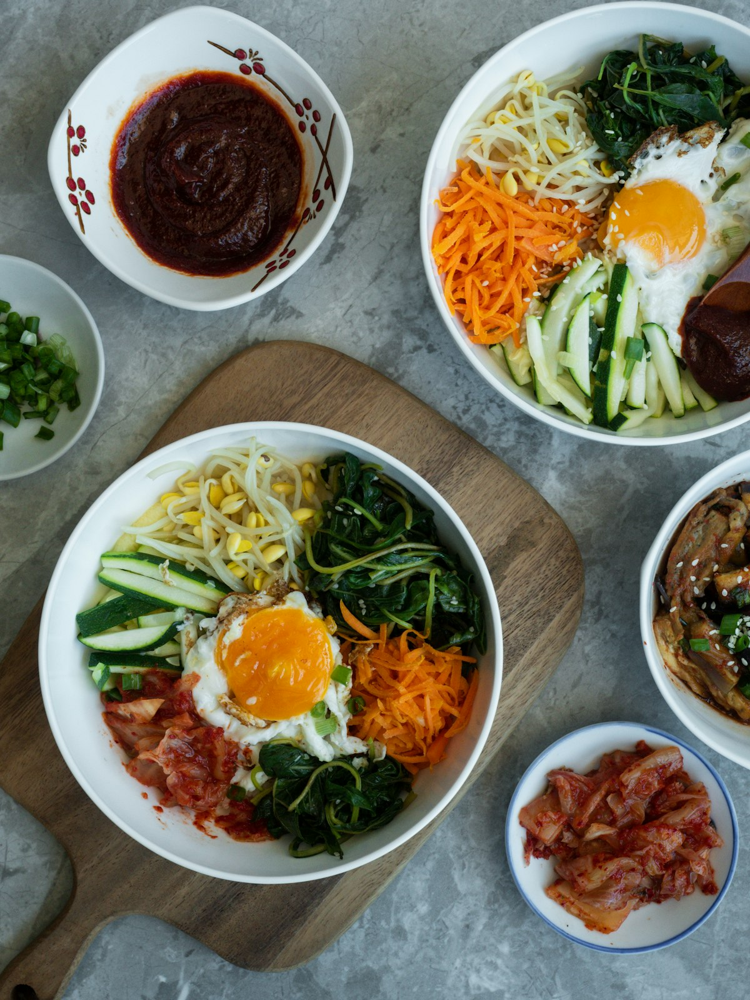

1. Yeasted Rice Batter
Unlike heavy pancake-style batters that absorb excess oil, our batter uses active yeast and sweet glutinous rice flour. As it fries, the yeast releases micro air pockets that yield a light, chewy doughnut-like crumb.
How 30 years of Charlotte culinary experience powers our crispy yeasted batters, Asian pear bulgogi marinades, and double-fried chicken.
Created by the team behind historic Fujiyama in Charlotte's Latta Arcade
Mochiko sweet rice flour blended with yeast for chewy elasticity
Two-stage oil frying to render moisture and lock in glass-like crispness
Natural enzymes tenderize premium ribeye with garlic and toasted sesame

Seoul Good CLT is not a corporate chain. It is the passion project of local restaurateurs who have fed Center City Charlotte workers, visitors, and families since 1995 with the legendary Fujiyama in Latta Arcade.
Why our K-Dogs and fried chicken stay extraordinarily crisp.
Unlike heavy pancake-style batters that absorb excess oil, our batter uses active yeast and sweet glutinous rice flour. As it fries, the yeast releases micro air pockets that yield a light, chewy doughnut-like crumb.
For our famous Potato Dog, par-cooked diced Idaho potatoes are pressed into the sticky yeasted batter before rolling in Japanese panko. When dropped in high-heat oil, the potato cubes fry into mini french-fry crisps.
Our Korean Fried Chicken is fried once at a moderate temperature to cook through, rested to release internal steam, and flash-fried a second time at high heat for a shattering, paper-thin crispy crust.

Every sauce at Seoul Good is crafted in-house to achieve the perfect balance of heat, garlic, honey sweetness, and umami depth: